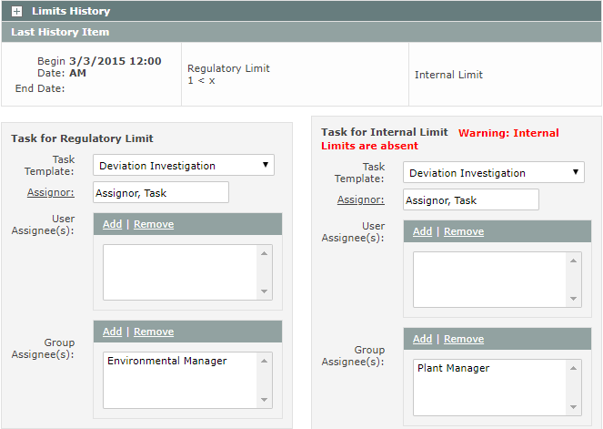
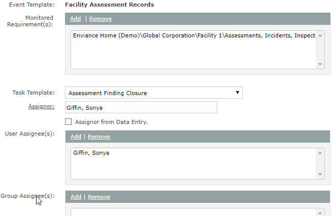

With the Template Update Tool you can add, change or delete object associations for the following template types:
The Template Update Tool has four worksheets, one for each template type with different requirements. All templates must be created first in the main application. After associating a template, you can upload values using the Object Properties Editing Tool.
All templates must already exist in the system. You cannot create new templates with the tool.
Download the Excel template file:
This worksheet can be used to change existing Event Template associations with Event Logs. Two caveats should be noted:
This worksheet can be used to change existing Requirement Template associations.
The <clear> function cannot be used, since a Requirement Template must be associated with all Requirement types.
This worksheet can be used to add or change Task Template associations with Event Logs or Numeric Requirements. You can also use it to change task assignor and assignees designated on templates already associated with objects.
For Numeric Requirements and Automatic Event Logs associated with Numeric Requirements, the Task Template is related to the limit that triggers an event. You must specify which limit the template is associated with, Regulatory or Internal. A requirement may have two Task Templates, one for each limit type. Use a separate line for each limit type.
Note: A limit value must already be applied to the Numeric Requirement before the Task Template can be applied and the fields edited. Limit values cannot be edited with the bulk tool.
| A | B | C | D | E | F | G | |
| 1 | Path and Name | Task Template | Assignor | Assignor From Data Entry (yes/no) | Assignee Users | Assignee User Groups | Template Type |
| 2 | \Division\Facility\POI\Calc1 | Template Name | userid | Group 1 | regulatory | ||
| \Division\Facility\POI\Calc1 | Template Name | userid | userid1 | userid2 | internal |
For Manual Event Logs with an associated Task Template, you may specify that Assignor be taken from the data entry (the user who creates the event in the log). Default, if null, is No.
| A | B | J | D | E | F | |
| 1 | Path and Name | Task Template | Assignor | Assignor From Data Entry (yes/no) | Assignee Users | Assignee User Groups |
| 2 | \Division\Facility\POI\Event LogManual | Template Name | userid | Group 1 | ||
| \Division\Facility\POI\Event LogManual | Template Name | yes | userid1 | userid2 |
Task Template associations may be removed with the <clear> function.
The Task Template and related fields for a numeric requirement and an Event Log from the main application UI are shown below for reference.


This worksheet may be used to add, change or remove Custom Field Templates associations with objects and requirements. The template association may be removed using the <clear> function.
Once a custom field template has been applied, you can edit the property values with the Object Properties Editing tools.
Caution: If a Custom Field Template is removed, all existing field values will be lost. If a Custom Field Template is changed, field values for fields not on the new template will be lost. Any fields that are on both old and new templates will retain current assigned values.